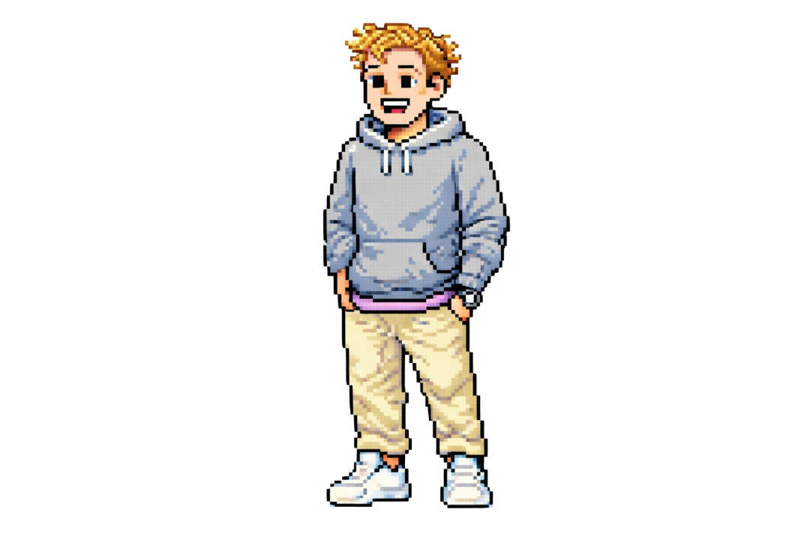
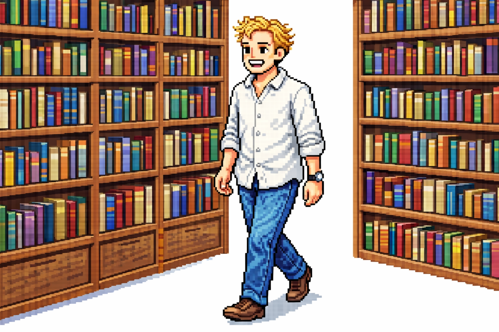

nicolas wissemann
(or just nick)
home
about
blog
resources
companion
books
resources
This is a small collection of things that I either created or that shaped how I think.

companion
— a practical Notion workspace I built
books
— reading that influenced my worldview